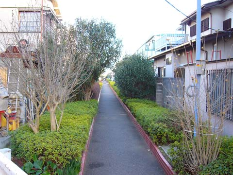
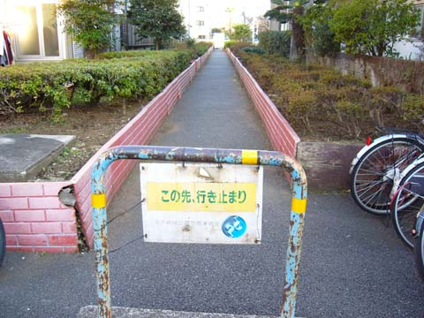
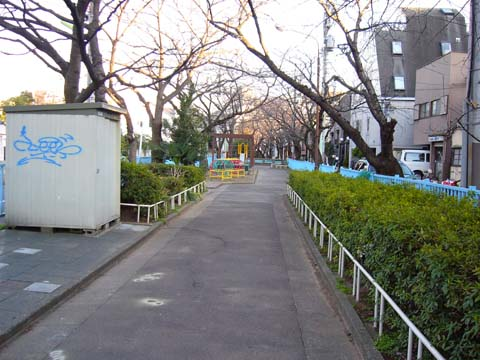
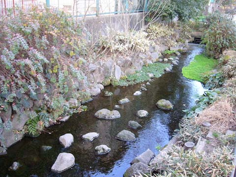
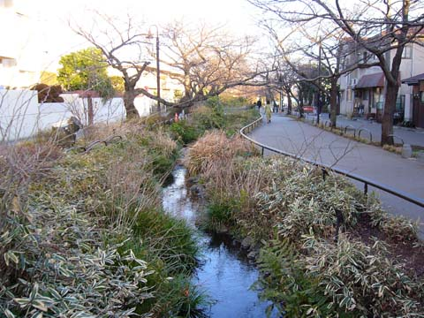
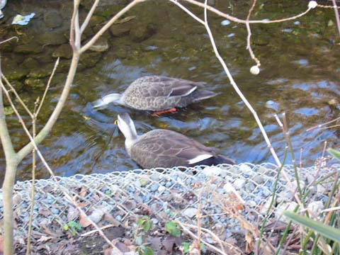
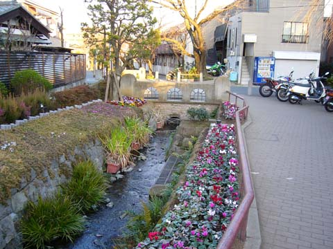
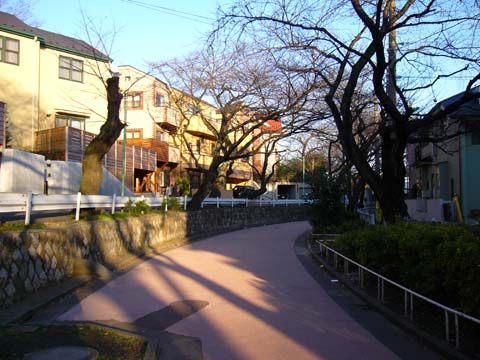
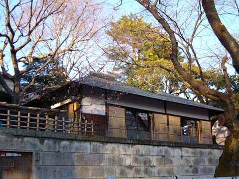

北沢川緑道 − 梅ヶ丘駅〜淡島交差点 − february, 15, 2004
小田急 梅ヶ丘駅から、徒歩数分のところ。民家の間を通る抜け道のようなカンジ。

◆歩き始めて5分ほどで、行き止まりに。

◆環七通りを渡り、再び緑道に戻る。

◆歩き始めて15分ほどで、人工の小川に辿り着く。

◆いぃカンジ。

◆カモたち。

◆オシャレなカンジ。

◆桜の木がたくさん。

◆梅の花。

■16時頃行ったので、少し寒かったです。もう少し暖かい時間 or 暖かくなってから、お散歩するコトをオススメします。
桜の時期になると、かなりいぃカンジになるのではないかと思います。
というワケで、お気楽になりたい時は、ブラブラしてみて下さい。
|
|